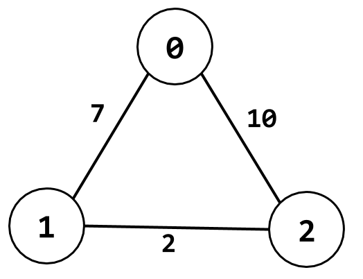

In this assignment, you will implement a distributed, asynchronous, distance-vector routing algorithm based on the Bellman-Ford algorithm that we learned in the lecture.
The network is modelled as an undirected graph with a certain number of nodes. Each link in the graph is associated with a positive integer cost. Below is a simple example of a graph with 3 nodes and 3 links. The nodes in the graph would, in a distributed and asynchronous manner, send each other messages containing information about their distance vectors, and, when receiving a message from another node, update their distance vectors accordingly. The expected outcome of the routing algorithm is that each node keeps a distance vector that stores its shortest-path distances (lowest costs) to other nodes in the graph, and knows how to find the shortest path to every other node.

Download the starter code which includes two files: dvsim.py and dvnode.py. Below is an overview of these two files.
dvsim.py is the main simulator code which implements a
simulated environment of the distributed, asynchronous route computing
process. It initializes the topology (the nodes and the links with
costs) of the input graph and provided class definitions such as
Packet, Event and EventList. The
implementation in this file is given to you and you won't need to
change it much (and you won't submit it to MarkUs); however, you need
read it carefully and understand thoroughly what it does and how it is
related to the Node class defined in
dvnode.py. You only need to modify this file when you try
to create different test cases for your algorithm. Below are the things
that you may need to modify.
NUM_NODES: this is the number of nodes in the
graph. You may change it according to the size of the graph
that you want to test on.generate_topology() method in
Simulator: this is the method that manually
assigns the costs of the links in the graph. You may change it
whichever graph topology that you'd like to test. Make sure the
size of the graph is consistent with what indicated by
NUM_NODES.generate_random_topology() generates graph
randomly given NUM_NODES. You use this to generate
test cases automatically instead of manually.if link_changes block the
__init__ method of Simulator adds
link-change events to the simulation. You may modify here to
add more link-change events.generate_link_change() method specifies what
exactly happens in the link-change event: which link's cost
changes and what's the new cost of the link. You may modify
this method in order to create the test case you need.dvsim.py. Since you will NOT submit
your own dvsim.py, you need to make sure your
submitted code works correct with the original
dvsim.py.dvnode.py is the file that you will work on completing.
This file defines the Node class for each node in the
network. You will implement the following methods:
__init__(): the constructor of the
Node class. You will initialized the
dist_table which keeps the distance vectors as
well as the predecessors list that will store the
predecessors of the node in its shortest paths to every other
nodes. The node may also want to start sending some packets to
their neighbours.update(): this method is called when the node
receives a packet from another node. You'll need to update the
distance table and the predecessor list accordingly, and notify
the node's neighbours about the update when necessary.link_cost_change_handler(): this method is invoked
when a link-change event occurs. The cost of a link would
change and the node need to update its distance table and
predecessor list accordingly, and notify the node's neighbours when
necessary.Node class.The command to run the simulator is the following:
python3 dvsim.py HasLinkChange Seed
where
HasLinkChange (1 or 0) specifies whether or not to add
link-change events to the simulation, and Seed (an
integer) is the seed of the pseudo-random number generator.
You should create various test cases to verify that your
implementation is correct, and to observe the behaviour of the
algorithm in different scenarios. In particular, you're required to
write up a report.pdf as part of your assignment
submission. The report should include the following parts:
HasLinkChange set to 0 (i.e., no
link-change events), use a test case on a graph with 5 nodes to
convince the reader that your algorithm is working correctly.
Add printouts for the intermediate steps to show that the
algorithm is behaving as expected.HasLinkChange set to 1, use a
test case on a graph with 4 nodes to demonstrate the
"good news travels fast" behaviour of the
routing algorithm.HasLinkChange set to 1, use a
test case on a graph with 4 nodes to demonstrate the
"bad news travels slowly" behaviour of the
routing algorithm.Below are some specific requirements just so that you know what to do and that your code can be properly marked by the TA.
dvnode.py works correctly with the
original dvsim.py since your will NOT submit your
own dvsim.pyYou will submit the following two files using the web submission interface of MarkUs.
dvnode.pyreport.pdf with the content specified in the above
"Testing and Report" section. Presentation
matters: your report must be presented in a clean
and concise manner that is easy-to-understand for others.
You can submit the same filename multiple times and only the latest version will be marked, so it is a good practice to submit your first version well before the deadline and then submit a newer version to overwrite when you make some more progress. Again, make sure your code runs as expected on a lab computer.
Late homework submissions are penalized by 1% for every hour of lateness, rounded up, to a maximum of 24 hours. Submissions will no longer be accepted 24-hours past the deadline, except for documented unusual circumstances.
Below is the tentative overall marking scheme of this assignment:
Coding style matters. Your code must be written in a proper style and must be well commented so that anyone else can read your code and easily understand how everything works in your code.
Please be reminded that ALL assignment submissions will be checked for plagiarism at the end of the term. Make sure to maintain your academic integrity carefully, and protect your own work. It is much better to take the hit on a lower assignment mark (just submit something functional, even if incomplete), than risking much worse consequences by committing an academic offence.